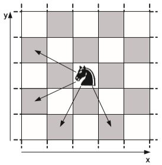

Alice and Bob are playing a game. Initially $K$ black Knights are placed on a $N×N$ chessboard. Now the players take turns. On each turn, a player moves every knight that has at least one valid move left. The following four moves are valid, as long as they do not move the knight off the board:

A knight with no valid moves left remains at its current position. The first player who is not able to move any of the knights loses the game. Note that during the game several knights are allowed to occupy the same square.
You are given the locations of the knights on the chessboard. Alice begins the game. Determine whether she can win the game, assuming that both players play optimally. If she can win, output a possible first move for each knight. In the beginning, there is at least one valid move for each knight, and no two knights are placed on the same square of the chessboard.
 Comet OJ
Comet OJ